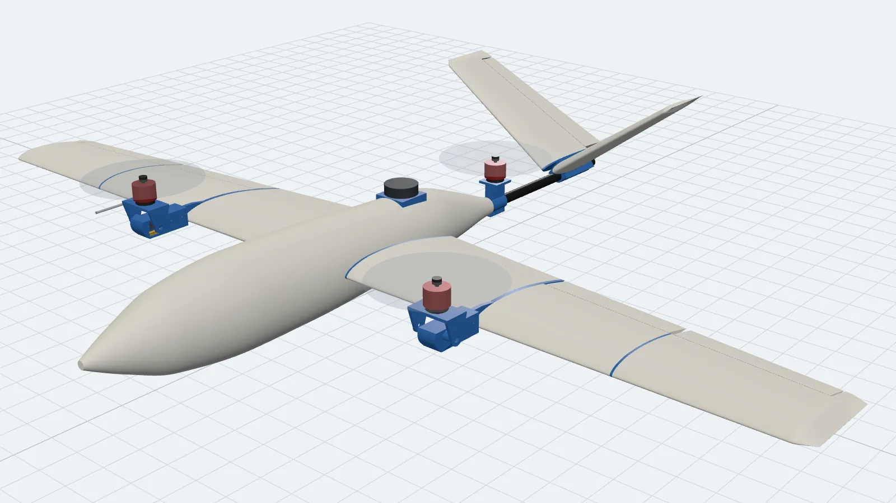
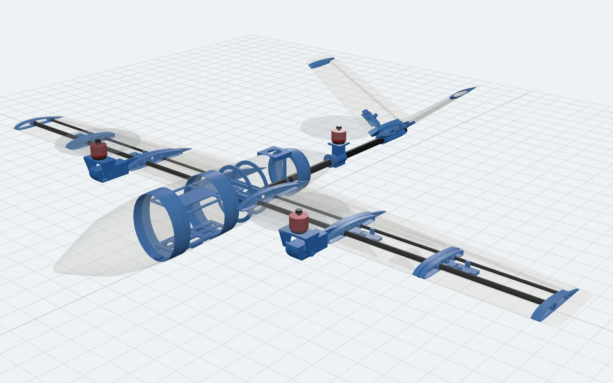
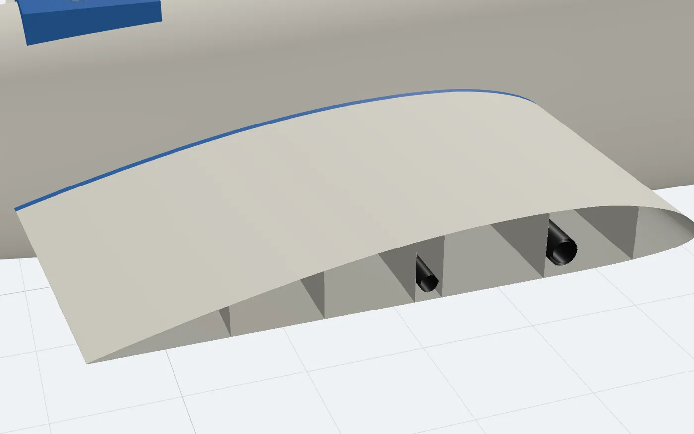
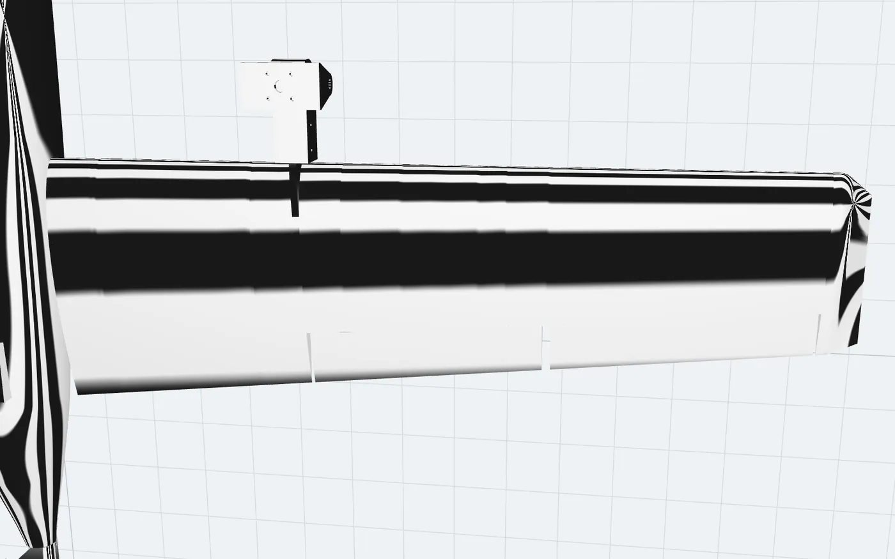
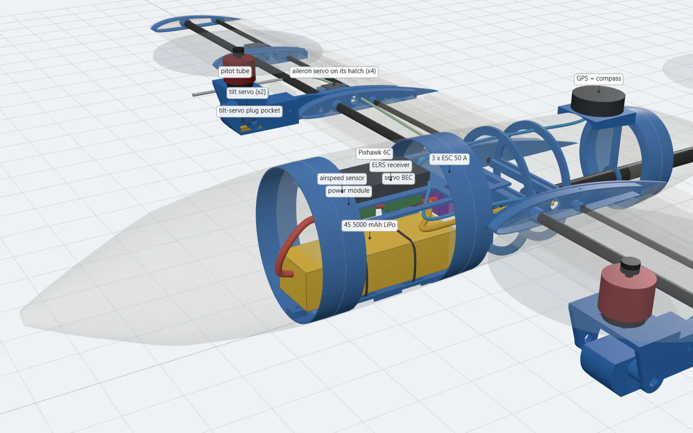
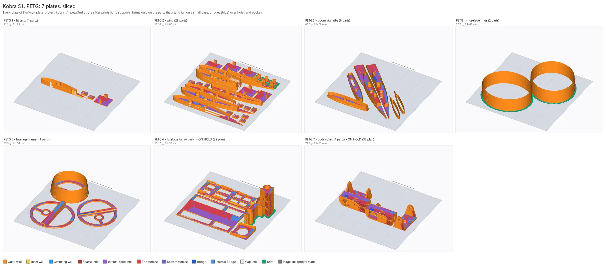
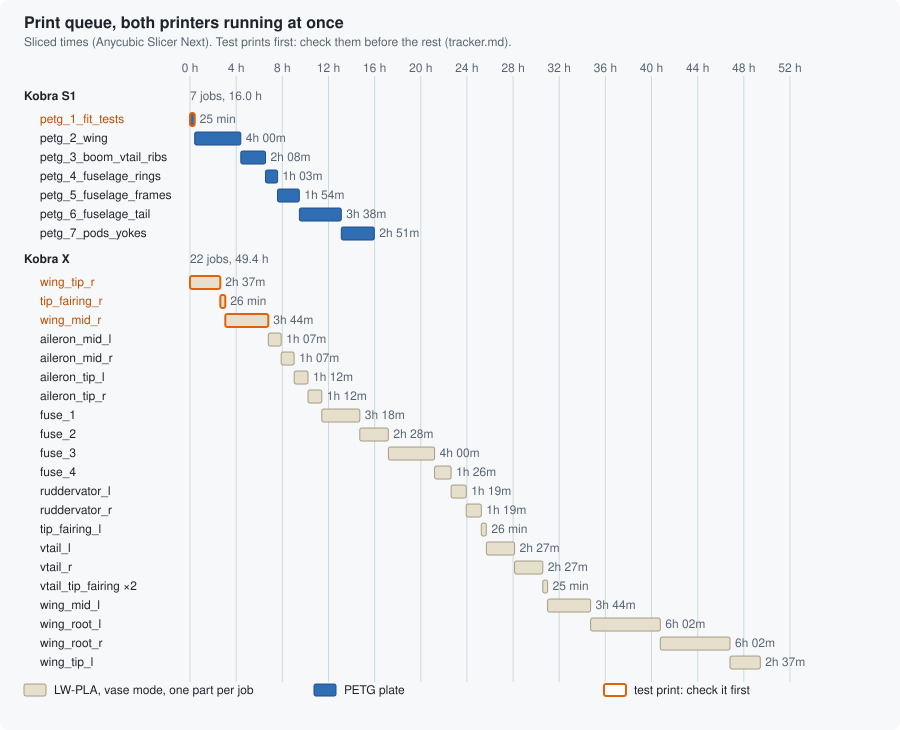

November 2026 · v0.2: designed and verified, test prints next
A 3-D Printed Tilt-Rotor VTOL, Generated and Verified in Code
It takes off like a drone and flies like a plane. Every part is generated by Python from a single parameter file, sliced from the command line, and signed off by an automated verification gate before any filament is used.

Drag to orbit · scroll to zoom · point at a part to name itSwipe to turn · pinch to zoom · tap a part
- LW-PLA skin
- PETG structure
- Carbon
- Motors
The aircraft's own CAD, built from the repository's files: the printed parts, the carbon tubes, the motors and the equipment inside. Tilt the front motors from hover to cruise, burst it apart, or switch on x-ray to see the structure and the avionics bay. Pointing at a part shows its job, its mass and its print time.
At a glance
- Layout
- Tilt-rotor tricopter: two front motors tilt from −20° to 90°, a fixed rear lift motor, V-tail
- Wing
- Clark Y, 220 → 150 mm chord, 0.27 m², Hoerner tips; V-tail NACA 0012 at 110° with ruddervators
- Power
- 3 × Emax ECOII 2807 1700 KV on 7 × 4.5 props, 50 A DShot ESCs, 4S 5000 mAh
- Avionics
- Pixhawk 6C running PX4 as a tilt-rotor VTOL; M10 GPS, airspeed sensor with pitot, ELRS receiver
- Estimates
- Cruise ~18 m/s, stall 10–11.5 m/s, ~7 min of pure hover, static margin ~18 %
- Airframe
- LW-PLA vase-mode skins with fused internal webs, PETG ribs and frames, carbon spars and tail boom
- Toolchain
- Python and build123d, Anycubic Slicer Next's command line, three.js, GitHub Actions
Takes off like a drone, flies like a plane
The layout is the same as the Flightory Stallion's: a tilt-rotor tricopter. Two motors on tilting yokes ahead of the wing lift the aircraft in hover and swing forward for cruise, while a third, fixed motor on the tail boom shares the hover load. In hover, PX4 controls yaw by tilting the two front motors in opposite directions. In forward flight the Clark Y wing and the V-tail carry the aircraft.
The number that matters: hover margin
A VTOL lives or dies by how hard its motors work in hover. The gate fails the design if a front motor needs more than 60 % of the thrust it makes on a nearly empty pack. The current 4S design passes at 58.9 %, which is legal but thin, and that is why the next revision moves to 3S with bigger props.
Thrust each front motor needs in hover, as a share of what it makes on a nearly empty pack. Both figures come from the repository's mass balance.
Design as code
The design lives in code, not in a CAD file. Every dimension is in one Python file. Scripts generate every part from it, lay each one out for its printer, slice it through the slicer's command line, and regenerate the documentation from the sliced files. Change one number and build_all.py rebuilds, re-slices and re-verifies the whole aircraft.
params.pyOne source of truthEvery dimension of the aircraft, in one file.skins.py · structure.pyGenerate the partsLW-PLA vase skins, and PETG structure in build123d.make_print_ready.py · plates.pyLay out for printingOrientation, printer and copies, and the seven PETG plates.slice_all.pySlice headlessG-code and a 3MF project for every job, from the slicer's CLI.mass_balance.py · make_viewer.py · make_tracker.pyMeasure and documentMass, CG and hover margin, the viewer, the tracker and charts.check_parts.pySign off121 checks, locally and in CI on every push.
A sign-off gate before any filament
I borrowed a habit from chip design: nothing goes to a printer until a sign-off gate passes. check_parts.py checks the generated meshes, the sliced G-code and the documentation, on my machine and in GitHub Actions on every push. It reads the G-code back instead of trusting the settings that produced it, and every G-code file carries a hash of the STL it was sliced from, so a stale file cannot slip through.
- MeshesWatertight, and left and right parts true mirror images.
- FitsEvery spigot, coupler, frame, ring and hatch, with its glue gap.
- FinishEvery glued skin joint flush to 0.15 mm, with no creases.
- PathsSpars, joiners, the tail boom and every wire route stay clear.
- MechanismMotor screws with hex-key room, the tilt sweep, prop clearances.
- BalanceThrust split, CG band, static margin and the hover margin.
- PrintabilityNo supports anywhere; no vase wall leans past 45°.
- EquipmentEverything fits; the battery and every servo come out.
- G-codeFresh, inside the bed, webs fused, nothing far over air.
- Slicer projectsEvery job's 3MF matches its G-code and settings.
- DocsViewer, tracker, charts and previews match the files.
- 121/121checks passing on the current design
[PASS] glued skin joints are flush (wing, V-tail, fuselage): root rib 0.02, boom rib in 0.02, …
[PASS] tilt yoke clears pod and boom rib over -25..95 deg: min 0.50 mm at -25 deg
[PASS] front prop disc clears wing, pod and fuselage over the tilt range: min 30.0 mm at -20 deg
[PASS] hover thrust per front motor <= 60 % of worst-case max: 58.9 % of 1250 g
[PASS] static margin 10-25 % MAC: 18 %
[PASS] battery slides out through the nose opening: 9.6 mm each side at the tightest point of its path
[PASS] wing webs print as fused double walls (G-code): 4 skins, every web fused (<= 0.42 mm) …
[PASS] PETG G-code lays nothing far over air: bridges span <= 30 mm, … longest 23.8 mm
[PASS] G-code has no support extrusions (profile sanity): 0 support moves
…
121/121 checks passedThe design itself went through eleven rounds of review and a premortem that started from "assume it already failed". Every finding and its fix is recorded in the repository's review report.
Inside the airframe
The skins are LW-PLA printed in vase mode: one continuous wall about 0.5 mm thick, foamed in the nozzle to roughly half the density of PLA. Ribs, frames, pods and couplers are PETG, and carbon tubes carry the bending loads: 10 mm and 6 mm wing spars on joiners, and a 16 mm tail boom.
Vase mode prints a single wall and nothing else, so the wing's internal webs are a trick of the geometry. Each web is a 0.06 mm slot cut up from the bottom skin. The nozzle runs up one side of the slot and back down the other, which prints a fused double wall joined to the top skin, with no extra moves. The gate checks in the G-code that every web came out fused.




Built to be serviced
Nothing that might need replacing is glued in. One nylon screw holds the nose; take it off and the battery slides out through the coupler ring in about a minute. Every aileron and ruddervator servo is screwed to its own hatch, and the tilt servos and front motors come out with the yokes. The gate checks those paths too: the battery's way out through the nose, the strap path, and every servo's way out through its hatch.
Two printers, one material each
The open-frame Kobra X prints every LW-PLA skin, one per job, since vase-mode parts cannot share a bed: 22 jobs, 49 h and 266 g from a single spool and a single flow calibration. The enclosed Kobra S1 prints all the PETG as seven plates in build order, in 16 h and 464 g. No part needs supports. Each job exists as G-code, as a 3MF project, and as a named plate in one complete project per printer.


Where it stands
- Designed51 parts from one parameter file
- Verified121/121 checks, 58 jobs sliced
- Test printsFlow, fits and wing webs
- Weigh and balanceReal masses into the balance
- Glide testAt the design CG
- Hover, then transitionBench, hover, then at altitude
Next revision: 3S. I'm moving the build to parts I already own: 3S packs, a Cube Black flight controller, a Power Brick Mini, and SunnySky X2814 900 KV motors on 12 in props. Modelled, the front motors hover at 47.9 % of their thrust instead of 58.9 %, and pure hover grows from about 7 to about 18 minutes. Only two PETG plates change, so everything else can print now.
Files and links
- GitHub repositoryGenerators, gate, G-code and slicer projects
- Design and build guideKey numbers, assembly, servicing
- Review reportEleven rounds of review and a premortem
- Print trackerEvery job with its mass and time
- PX4 setupGeometry, outputs, tilt calibration, first flight
- 3S build planMotor choice, changes, shopping list
- Exterior model (STL)In GitHub's 3-D viewer
- This page's 3-D modelglTF binary (GLB), 1 MB